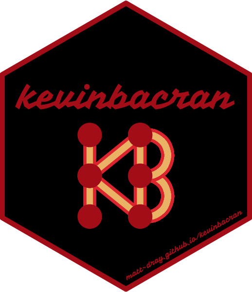

tl;dr
I made the {kevinbacran} R package (as in ‘Kevin Bacon’ + ‘CRAN’, lol) to find the network separation between any two authors on CRAN.
Then I made a Shiny app to demonstrate the Six Degrees of Kevin Bacon. Except it’s for CRAN authors. And Hadley Wickham is Kevin Bacon.
Six degrees
People are connected to each other in networks. What is the average separation of any two people in the network? There’s a popular idea of there being six degrees of separation.
Instead of separation between any two people, we can measure separation from one fixed person. For example, we can calculate a Bacon Number for actors connected to Kevin Bacon, ‘centre of the entertainment universe’.
It works like this: you have a Bacon Number of zero if you are Kevin Bacon (hi Kevin, thanks for reading my blog). You have a Bacon Number of one if you were in a film with him. Your number is two if you were in a film with someone who was in a film with Kevin Bacon.
A more classic example is the Erdős Number, which expresses the separation of mathematicians from the prolific Paul Erdős via published academic papers. And yes, there’s an Erdős-Bacon Number for actor-mathematicians.1
We can extend this approach to any network. One nerdy example is shared authorship on packages published on the Comprehensive R Archive Network (CRAN), the go-to repository for packages for the R programming language. {kevinbacran} can help you do this.
The {kevinbacran} package
You can learn about the package on the {kevinbacran} site2, see the code on GitHub and feel free to leave an issue.
It is currently incomplete, potentially unstable, inefficient and untested. It’s main purpose was to sate curiosity and provide some helper functions for the Shiny app.
The package has only four functions3:
| Function | Description |
|---|---|
kb_combos() |
Fetch CRAN data, clean author names, get author combos per package, create network graph object |
kb_pair() |
Gets network graph of the shortest distance between two authors from the kb_combos() graph |
kb_distance() |
Separation (number of edges) between authors in kb_pair() |
kb_plot() |
Returns a {ggraph} plot from the kb_pair() object |
The package relies heavily on others, particularly {cranly}, {tidygraph}, {ggraph}, and {dplyr} and {purrr}. The code for getting author combinations per package is from Duncan Garmonsway4.
The app
We could use the functions mentioned to obtain graphs between all authors and a single named author of our choosing. We’re going to use Hadley Wickham as the target, since he is among the most named authors on CRAN. This may be largely explained by his involvement in the tidyverse suite of packages and their use in packages maintained by other authors.
Below is an embedded version of the Shiny app, but you can access it in full from its own page on shinyapps.io5, or download the code from GitHub.
Type an author name and hit go. You’ll get the Hadley Number and a graph to represent a shortest path between them.
You may notice:
- that your name is missing (perhaps you’re not on CRAN, or a shortest path could not be reached)
- the author names look weird or the same people are listed under variant names ({cranly} is excellent at cleaning names, but the author field is very unstructured; just ask Duncan Garmonsway6)
- that some of the labels overlap and are hard to read (try hitting the Go button again)
You are very welcome to use, improve or ignore the code for the app on GitHub, where you can leave issues.
Read next
The purpose of this post and the app were to give a flavour of the possibilities for {kevinbacran}. Of course, graph theory is a whole area of study and I haven’t incorporated any analysis of the characteristics of the CRAN network here (e.g. measures of centrality or detection of communities).
Fortunately, Duncan Garmonsway’s ‘With added bacran’ blog post covers:
- Who has the highest Hadley number?
- What is the longest ‘shortest path’ between any two CRAN authors?
- What is the largest network disconnected from Hadley?
- Is Hadley the most central author?
Also, if you choose to use your Hadley Number to gain street cred, you may be interested in Robin Edwards’s Hadley Index repo:
How early did you start following Hadley Wickham? Can be used as a last resort to resolve R arguments.
Note
I later discovered Ash Baldry has made a similar Shiny app where you can get a Wickham Number, or the degrees of separation between any two CRAN authors.
Environment
Session info
Last rendered: 2023-08-03 18:40:01 BSTR version 4.3.1 (2023-06-16)
Platform: aarch64-apple-darwin20 (64-bit)
Running under: macOS Ventura 13.2.1
Matrix products: default
BLAS: /Library/Frameworks/R.framework/Versions/4.3-arm64/Resources/lib/libRblas.0.dylib
LAPACK: /Library/Frameworks/R.framework/Versions/4.3-arm64/Resources/lib/libRlapack.dylib; LAPACK version 3.11.0
locale:
[1] en_US.UTF-8/en_US.UTF-8/en_US.UTF-8/C/en_US.UTF-8/en_US.UTF-8
time zone: Europe/London
tzcode source: internal
attached base packages:
[1] stats graphics grDevices utils datasets methods base
loaded via a namespace (and not attached):
[1] htmlwidgets_1.6.2 compiler_4.3.1 fastmap_1.1.1
[4] cli_3.6.1 tools_4.3.1 htmltools_0.5.5
[7] xaringanExtra_0.7.0 rstudioapi_0.15.0 yaml_2.3.7
[10] rmarkdown_2.23 knitr_1.43.1 jsonlite_1.8.7
[13] xfun_0.39 digest_0.6.33 rlang_1.1.1
[16] fontawesome_0.5.1 evaluate_0.21 Reuse
CC BY-NC-SA 4.0